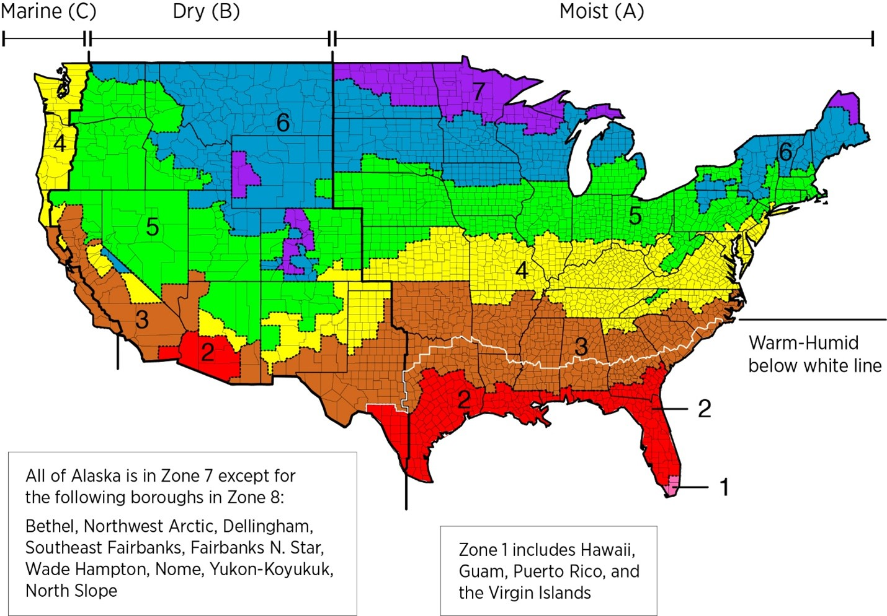

Main findings for ASHRAE Standard 62.2
Positive pressure fresh air system
Classrooms/dormitories with uncomplicated structure and moderate size-choose the positive pressure type. The positive pressure type can fully filter the air and send it into the room, but on the one hand, it lacks heat exchange function, which is easy to cause temperature loss. On the other hand, it lacks pipe guidance. The air circulation efficiency and effect are reduced compared to the two-way heat exchange type. The advantage is that it is easy to install and has a low impact on the indoor space.
Full heat exchanger
The Multifamily structure is relatively complex, with a medium or large area and a moderate floor height—choose the two-way flow heat exchange type. In fact, basically any building, except for the old houses with very low floors, I recommend the two-way flow heat exchange type. It balances many elements of filtration + heat retention + indoor purification efficiency, which can be described as the most scientific principle of fresh air system. The total heat exchange type performs temperature and humidity exchange without generating condensed water, and now there are antibacterial heat exchange cores available, so heat exchange is completely reliable. But the trouble is that laying pipes is more laborious, so newly decorated houses are more suitable for two-way flow heat exchange
Stimulus for renovation
The renovated hotel is the target for the wall-mounted products. Although annual growth at 1.4% for hotels is hit hard by pandemic, the overall market should be focus on the rebuild and upgrades. We acknowledge that the renovated hotel is not suitable nor easy to install pipes or install top-mounted machines. No matter the positive pressure type or the two-way flow heat exchange type, the installation is extremely difficult, and the wall-mounted type is built for this type of renovation.
Main findings for ASHRAE Standard 170
Functionility for condensed space
In the expanded market research, the absent commercial markets are identified including major recreational facilities., working offices, and study areas. Based on the research results, a negative pressure ventilation system is the most efficient and economical solution for the prevention of transmitting the air-borne virus in small and dense spaces. No matter the positive pressure type or the negative pressure type, either choice would be suitable depending on the expert’s suggestion.
With the most concerned, Eldercare, daycare center and the hospital would the projects in urgent need of renovation with priorities, meanwhile those facilities need to be functioning continuously. Most of the facilities have complied with standard ASHRAE 170-2013/2017.
With average market growth rate for care centers around 2.4-2.9% CAGR and for hospital 5.376% CAGR. It would be critical to developing the outreach for care centers whose growth rates are below the global average.
In conclusion, I suggest the add-on unit would be a considerable solution to provide next-level clean air solution, such as wall-mounted ventilators with HEPA. In addition, customer should be aware that the air outlet should be designed upward otherwise may cause dust problem for sensitive patients
Negative Pressure Ventilation and possible suggestion

Combined our products with the United States climate zone, it would not be reasonable to apply negative pressure ventilation to all of the public infrastructure. The high-end positive pressure fresh air system can realize the intelligent heating function, which can heat the outdoor air to a comfortable temperature in the cold winter.
Therefore, the negative pressure fresh air system is generally only suitable for users in southern part of United States, typically zone 2,3,5 who have urgently need mechanical forced exhaust.